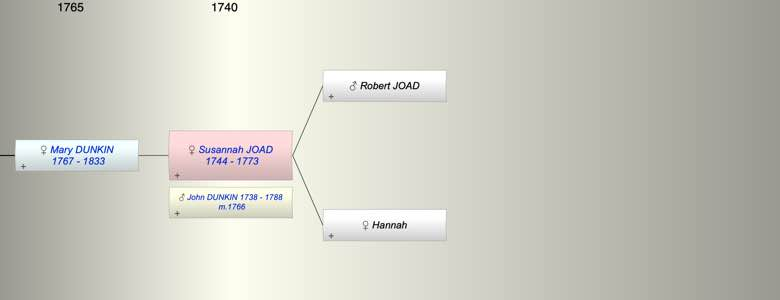

| [Index] |
| Susannah JOAD (1744 - 1773) |
|  |
| b. 1744 at St Laurence |
| m. 10 Feb 1766 John DUNKIN (1738 - 1788) at St Laurence |
| d. Sep 1773 at St Laurence aged 29 |
| Parents: |
| Robert JOAD |
| Hannah |
| Children (1): |
| Mary Matson DUNKIN (1767 - 1833) |
| Events in Susannah JOAD (1744 - 1773)'s life | |||||
| Date | Age | Event | Place | Notes | Src |
| 1744 | Susannah JOAD was born | St Laurence | Note 1 | ||
| 10 Feb 1766 | 22 | Married John DUNKIN (aged 28) | St Laurence | Note 2 | |
| 04 Feb 1767 | 23 | Birth of daughter Mary Matson DUNKIN | St Laurence | Note 3 | |
| Sep 1773 | 29 | Susannah JOAD died | St Laurence | aged 29 ex St Laurence MIs | |
| Created on a Mac™ using iFamily for Mac™ on 8 Oct 2023 |